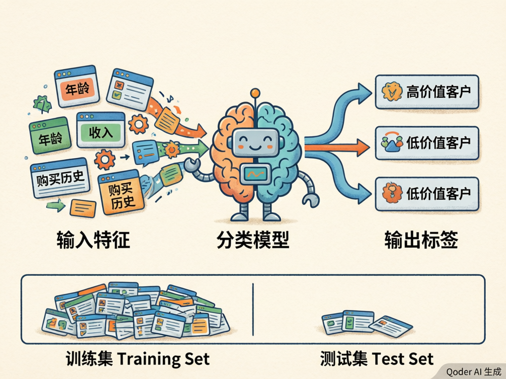
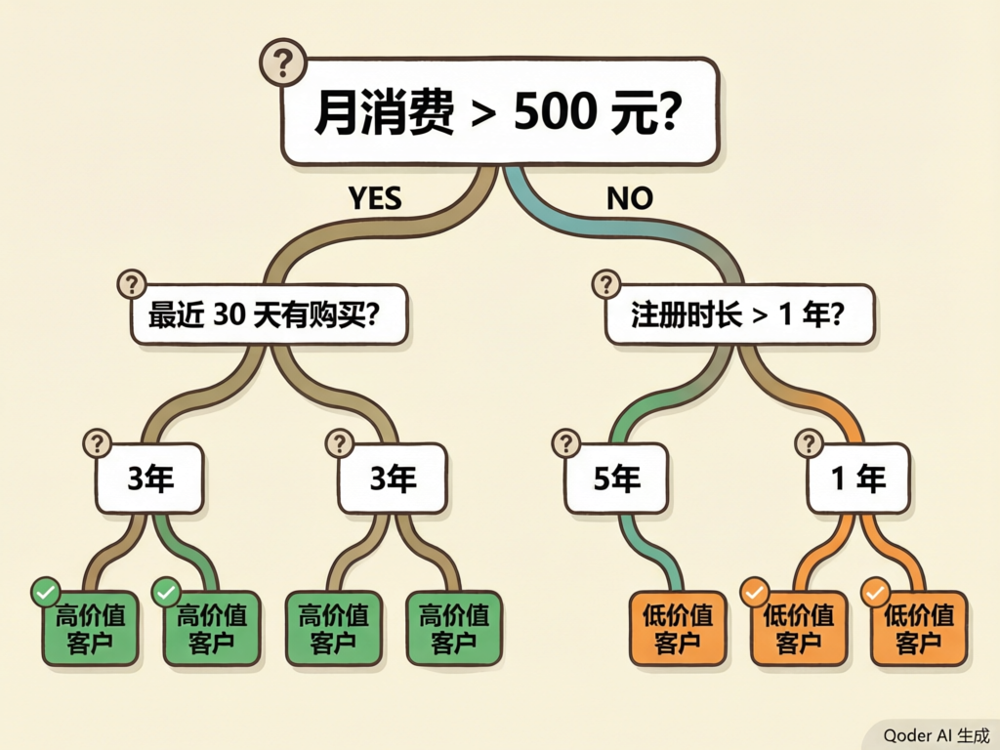
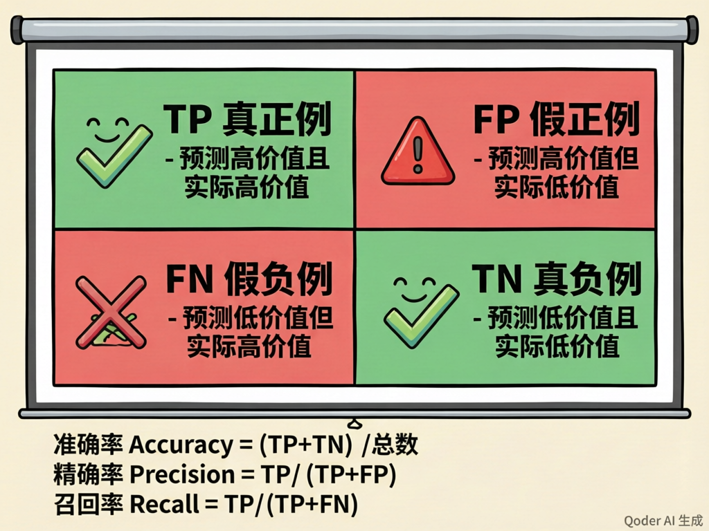
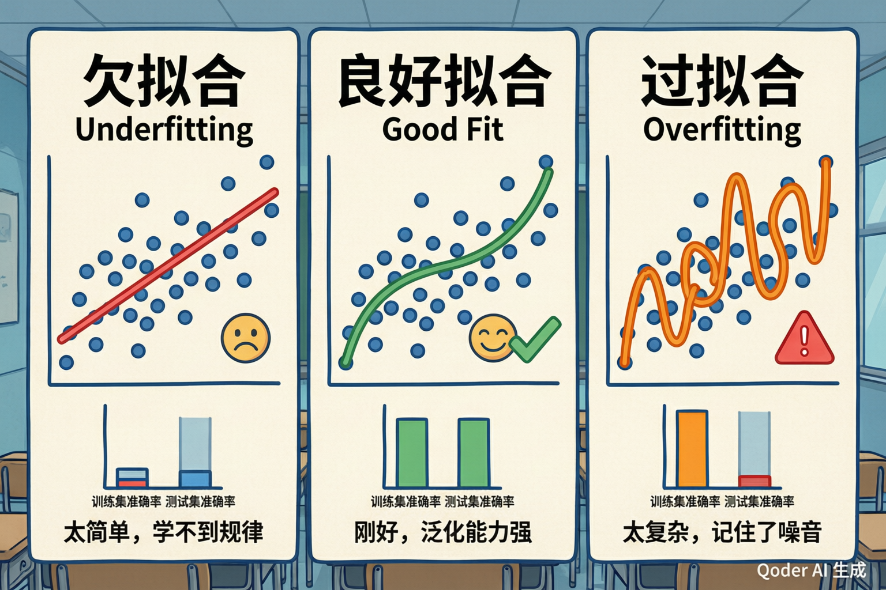

分类与决策树
从数据中学习规则，让机器做出判断——用一棵"树"来理解人工智能如何分类
生活中的分类
每天早上，你打开手机看一眼天气——"今天会下雨吗？"这是一个分类问题：下雨 或 不下雨，二选一。你收到一条短信——"这是垃圾短信还是正常短信？"同样是分类。医生看一张X光片——"这片子有没有异常？"也是分类。
在人工智能中，分类（Classification） 就是让机器根据输入的信息，自动判断它属于哪一类。它是机器学习中最基础、应用最广泛的问题类型之一。
垃圾邮件检测
输入：邮件内容
输出：「垃圾邮件」或「正常邮件」
二分类
疾病筛查
输入：体检指标数据
输出：「健康」或「需要复查」
二分类
客户分层
输入：消费记录、浏览行为
输出：「高价值」「中价值」「低价值」
多分类
图像识别
输入：一张图片的像素
输出：「猫」「狗」「鸟」……
多分类

特征（Feature）
用来描述每个样本的属性。比如判断客户价值时，特征可以是：月消费金额、购买频率、注册时长、最近一次购买距今多少天。
类比：判断一个人是否适合打篮球，特征就是身高、体重、弹跳力。
标签（Label）
我们希望模型预测的答案。标签是已知的、正确的分类结果。在训练阶段，每个样本都需要有人工标注的标签。
类比：老师批改过的试卷上的分数，就是每道题的"标签"。
训练集（Training Set）
用于教模型"学习"的数据。模型从训练集的（特征 + 标签）中寻找规律。
类比：课本上的例题，用来学习解题方法。
测试集（Test Set）
用于检验模型学得好不好的数据。模型在训练时不能看到测试集。
类比：期末考试卷，题目不能和作业一模一样，否则就是作弊。
一个让人警醒的故事
假设你是一名数学老师。你给学生布置了10道完全一样的练习题，让他们反复做。一周后期末考，你还是出了同样的10道题。学生全部得了满分。请问：这能证明学生真正学会了数学吗？
不能。他们只是背下了答案。真正检验学习效果，必须用他们没见过的题目。
100%
70%~80%
用于学习
20%~30%
用于验证
🧠 课堂小测
从日常直觉到数学算法
你玩过"20个问题"的游戏吗？一个人心里想一个东西，另一个人通过问"是/否"问题来猜。好的提问策略总是从最能缩小范围的问题开始——比如先问"它是活的吗？"而不是"它是蓝色的吗？"
决策树正是这个思路的数学实现。它用一连串的 IF-THEN 规则，从根节点出发，沿着分支不断提问，最终到达一个叶子节点——也就是分类结果。

IF 月消费 > 500元 AND 最近30天有购买 THEN 预测为「高价值客户」
决策树的优点在于可解释性强——你可以清楚地告诉别人"为什么做出这个判断"，而不像某些黑箱模型那样让人摸不着头脑。
根节点（Root）
整棵树的起点，包含全部训练数据。选择最有效的特征进行第一次分裂。
内部节点（Internal）
中间的决策点，每个节点对某个特征进行测试，根据结果走向不同的分支。
叶节点（Leaf）
最终的分类结果。到达叶节点后不再分裂，输出该节点的"多数类别"作为预测。
怎样选择"最好的"分裂特征？
决策树在每个节点面临一个关键问题：用哪个特征来分裂数据最好？评判标准有两个经典方法：
信息增益（ID3/C4.5）
源自信息论中的熵（Entropy）概念。熵衡量数据的"混乱程度"——如果一堆数据里正负样本各一半，熵最大（最混乱）；如果全是同一类，熵为零（最纯净）。
信息增益 = 分裂前的熵 − 分裂后的加权平均熵。增益越大，说明这次分裂让数据变得更纯净，越值得选。
基尼系数（Gini / CART）
另一种衡量"不纯度"的指标。Gini 越小，数据越纯净。计算比信息增益稍简单，是 CART 决策树默认的方法。
💡 课堂提示：初中阶段只需理解"选能最好地区分不同类别的特征"即可，具体的数学公式不要求掌握。
递归构建 + 停止条件
决策树的构建是一个递归过程：在每个节点选最优特征 → 分裂数据 → 在子节点重复此过程。但树不能无限生长，必须设置停止条件：
都属于同一类？
都用完了？
达到上限？
🕹️ 客户价值分类器
假设你是某电商平台的AI，需要判断一个新客户是否属于"高价值客户"。请根据以下信息做出判断：
模型也会"犯错误"——而且有两种不同的错法
分类模型做出预测后，和真实标签对比，有四种可能的结果。把这四种结果放进一个 2×2 的表格，就是混淆矩阵（Confusion Matrix）——它虽然名字叫"混淆"，但一点都不难理解。

TP 真正例 ✅
预测为"高价值"，实际也是"高价值"。
模型判断正确！
类比：天气预报说会下雨，果然下了。
FP 假正例 ❌
预测为"高价值"，实际是"低价值"。
虚惊一场——误报！
类比：火警报警器响了，结果只是有人烧糊了饭。
FN 假负例 ❌
预测为"低价值"，实际是"高价值"。
漏掉了——漏报！
类比：体检没查出问题，但其实有病。
TN 真负例 ✅
预测为"低价值"，实际也是"低价值"。
模型判断正确！
类比：天气预报说不会下雨，果然没下。
光看"准确率"不够
假设你在一个1000人的学校里找10个隐藏的"卧底"。你只要对每个人都说"不是卧底"，你的准确率就是 99%！但你没有找到任何一个真正的卧底——这个模型毫无用处。
因此，我们需要多个指标来全面评估模型的表现。
准确率 Accuracy
所有预测中，正确的比例。最直观，但在数据不平衡时容易误导人。
精确率 Precision
预测为"正"的样本中，真正是正的比例。衡量"宁缺毋滥"——我说你是高价值客户，你真的是吗？
召回率 Recall
真正的正样本中，被找出来的比例。衡量"宁滥勿缺"——真正的高价值客户，我找全了吗？
F1 分数
精确率和召回率的调和平均。当两者需要平衡时使用，越接近1越好。
召回率 Recall =「真的是，我都找全了吗？」（宁可多找，不能漏掉）
🧠 快速判断
极端不平衡的数据
假设某电商平台有 100,000 个客户，其中只有 100 个是高价值客户（占比 0.1%）。如果你写一个"傻瓜模型"——对所有人都预测为"低价值"——那么：
准确率高得惊人！但这个模型一个高价值客户都没找到，召回率为 0，完全没用。
什么样的指标组合才算好模型？
| 模型 | 准确率 | 精确率 | 召回率 | F1 | 综合评价 |
|---|---|---|---|---|---|
| 傻瓜基线（全猜低价值） | 99.9% | — | 0% | — | ❌ 没用 |
| 瞎猜模型（随机猜） | ~50% | ~0.1% | ~50% | ~0.2% | ❌ 比不猜还差 |
| 我们的决策树 | 98.2% | 85% | 72% | 78% | ✅ 有效 |
实验目标
使用模拟的电商客户数据，训练一棵决策树来识别"高价值客户"，并与基线模型做对比。
定义什么是"高价值"
70%训练 / 30%测试
多数类预测器
max_depth=5
混淆矩阵+重要性
模拟数据集（前10条）
| 客户ID | 月消费(元) | 购买次数 | 注册天数 | 最近购买(天) | 标签 |
|---|---|---|---|---|---|
| 001 | 680 | 12 | 420 | 3 | 高价值 |
| 002 | 120 | 2 | 30 | 45 | 低价值 |
| 003 | 890 | 25 | 600 | 1 | 高价值 |
| 004 | 350 | 5 | 180 | 12 | 低价值 |
| 005 | 2100 | 40 | 900 | 2 | 高价值 |
| 006 | 80 | 1 | 15 | 60 | 低价值 |
| 007 | 560 | 8 | 365 | 8 | 高价值 |
| 008 | 200 | 3 | 90 | 30 | 低价值 |
| 009 | 1500 | 32 | 720 | 5 | 高价值 |
| 010 | 45 | 0 | 5 | — | 低价值 |
决策树 vs 基线模型 — 混淆矩阵对比
❌ 基线模型（全猜低价值）
| 预测高 | 预测低 | |
|---|---|---|
| 实际高 | 0 (TP) | 50 (FN) |
| 实际低 | 0 (FP) | 950 (TN) |
召回率 = 0%，F1 = 无意义
✅ 决策树（max_depth=5）
| 预测高 | 预测低 | |
|---|---|---|
| 实际高 | 42 (TP) | 8 (FN) |
| 实际低 | 6 (FP) | 944 (TN) |
精确率=87.5% · 召回率=84% · F1=85.7%
特征重要性分析
决策树训练完成后，我们可以知道哪些特征对分类判断贡献最大：
| 特征 | 重要性 | 解读 |
|---|---|---|
| 月消费金额 | 0.45 | 最重要的判断依据，高消费者更可能是高价值客户 |
| 购买次数 | 0.28 | 频繁购买是忠诚度的重要信号 |
| 最近购买距今 | 0.18 | 刚买过的人更活跃，更可能再次购买 |
| 注册天数 | 0.09 | 老客户不一定是高价值客户，贡献较小 |

欠拟合 Underfitting
模型太简单，连训练数据中的基本规律都没学到。在训练集和测试集上表现都很差。
原因：树太浅、特征太少、停止条件太严格。
💊 解决：增加树的深度、添加更多特征。
良好拟合 Good Fit
模型恰到好处，学到了数据中的真实规律，同时忽略了无关的噪音。在训练集和测试集上都表现良好。
🎯 这是我们追求的目标。
过拟合 Overfitting
模型太复杂，不仅学了规律，还记住了训练数据中的每一个噪音和异常点。训练集表现极好，但测试集大幅下降。
原因：树太深、叶子节点太少样本、没有剪枝。
💊 解决：预剪枝、后剪枝（CCP）、交叉验证。
两种"剪枝"策略
| 策略 | 原理 | 常用方法 |
|---|---|---|
| 预剪枝 Pre-pruning | 在树生长过程中就提前阻止它长太深 | 限制最大深度（max_depth）、限制最小分裂样本数（min_samples_split）、限制最小叶节点样本数（min_samples_leaf） |
| 后剪枝 Post-pruning | 先让树充分生长，再从下往上剪掉没用的分支 | CCP（代价复杂度剪枝）：对每个分支计算"留着它带来的精度提升 vs 复杂度代价"，性价比低的就剪掉 |
知识地图
📋 分类问题 → 四要素（特征/标签/训练集/测试集）→ 训练集和测试集必须分离
↳ 🌳 决策树 → IF-THEN 规则 → 分裂标准（信息增益/Gini）→ 递归构建 + 停止条件
↳ 📊 模型评估 → 混淆矩阵（TP/TN/FP/FN）→ 准确率/精确率/召回率/F1 → 准确率陷阱
↳ 🧪 实验验证 → 标签构造 → 训练 → 评估 → 特征重要性 → 误判分析
↳ 🔍 进阶调优 → 过拟合 vs 欠拟合 → 预剪枝 & 后剪枝 → 交叉验证
1. 分类就是用数据教机器做判断，训练集和测试集必须分开，就像平时作业和期末考试要不同。
2. 决策树用一连串的 IF-THEN 规则来分类，它最大的优点是可解释——你能清楚说出为什么做出某个判断。
3. 评价模型不能只看准确率。精确率和召回率分别衡量"说对了吗"和"找全了吗"。好的模型要在这两者之间找到平衡。
🧠 终极挑战
你现在已经理解了机器学习中分类问题的核心概念，知道了决策树如何工作，以及如何科学地评估一个模型。感兴趣的话，可以继续探索：随机森林、支持向量机（SVM）、神经网络等更高级的分类算法。